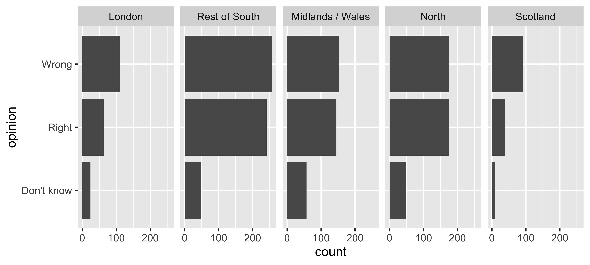
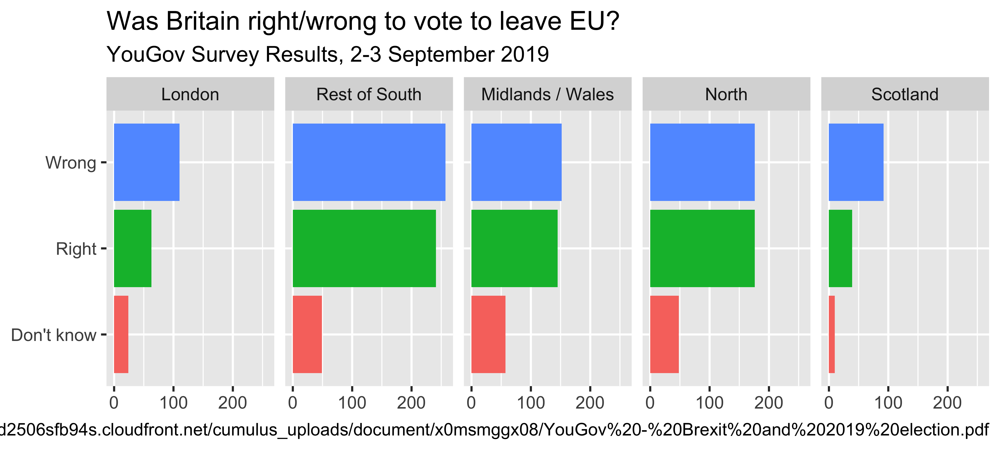
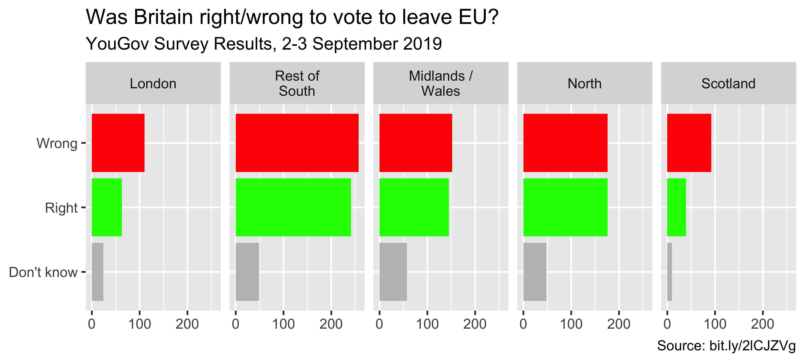

05-viz
Effective Data Visualization
Slides modified from datascienceinabox.org
Q&A
Q: Does ggplot2 allow access to the same color schemes that we use in Python? I’m familiar with using Matplot.lib, but it seems slightly different for ggplot2.
A: You can directly control color in R. We’ll discuss that, but you can also use a ton of available color palletes. See here.You’ll find what you largely have in matplotlib but also additional palettes.
Q: What are some common aesthetics options for graphs?
A: Discussing this today!
Q: Why in the world anyone would think that %>% is an acceptable operator
A: Hadley Wickham (the developer) has made SO many incredible updates to the consistency and syntax in R. This was just NOT one of them.
Course Announcements
Due Dates:
- Lab 02 due tonight (11:59 PM)
Groupre-coded as with WB/OF- Lecture Participation survey “due” after class
Notes:
- Lab03 now available
- Case Study Groups will be sent tomorrow; will discuss case study in class on Tues.
Suggested Reading
- R4DS Chapter 11: Data Communication
- The Glamour of Graphics: [video] [slides] [Prof’s slides inspired by Will’s talk]
Keep it simple

Use color to draw attention
Tell a story

Credit: Angela Zoss and Eric Monson, Duke DVS
Principles for effective visualizations
Principles for effective visualizations
- Order matters
- Put long categories on the y-axis
- Keep scales consistent
- Select meaningful colors
- Use meaningful and nonredundant labels
Data
In September 2019, YouGov survey asked 1,639 GB adults the following question:
In hindsight, do you think Britain was right/wrong to vote to leave EU?
- Right to leave
- Wrong to leave
- Don’t know

Source: YouGov Survey Results, retrieved Oct 7, 2019
The Data: Code
brexit <- tibble(
opinion = c(
rep("Right", 664), rep("Wrong", 787), rep("Don't know", 188)
),
region = c(
rep("london", 63), rep("rest_of_south", 241), rep("midlands_wales", 145), rep("north", 176), rep("scot", 39),
rep("london", 110), rep("rest_of_south", 257), rep("midlands_wales", 152), rep("north", 176), rep("scot", 92),
rep("london", 24), rep("rest_of_south", 49), rep("midlands_wales", 57), rep("north", 48), rep("scot", 10)
)
)Order matters
Alphabetical is rarely ideal
ggplot(brexit, aes(x = opinion)) +
geom_bar()Order by frequency
Clean up labels
Avoiding Alphabetical Order
ggplot(brexit, aes(x = region)) +
geom_bar()Use inherent level order
Clean up labels

Put long categories on the y-axis
Long categories can be hard to read
Move them to the y-axis
And reverse the order of levels
Clean up labels
Pick a purpose
Segmented bar plots can be hard to read
Use facets
Avoid redundancy?

Redundancy can help tell a story
ggplot(brexit, aes(y = opinion, fill = opinion)) +
geom_bar() +
facet_wrap(~region, nrow = 1)Be selective with redundancy
Use informative labels
A bit more info

ggplot(brexit, aes(y = opinion, fill = opinion)) +
geom_bar() +
facet_wrap(~region, nrow = 1) +
guides(fill = "none") +
labs(
title = "Was Britain right/wrong to vote to leave EU?",
subtitle = "YouGov Survey Results, 2-3 September 2019",
caption = "Source: https://d25d2506sfb94s.cloudfront.net/cumulus_uploads/document/x0msmggx08/YouGov%20-%20Brexit%20and%202019%20election.pdf",
x = NULL, y = NULL
)Let’s do better
Fix up facet labels

ggplot(brexit, aes(y = opinion, fill = opinion)) +
geom_bar() +
facet_wrap(~region,
nrow = 1,
labeller = label_wrap_gen(width = 12)
) +
guides(fill = "none") +
labs(
title = "Was Britain right/wrong to vote to leave EU?",
subtitle = "YouGov Survey Results, 2-3 September 2019",
caption = "Source: bit.ly/2lCJZVg",
x = NULL, y = NULL
)Select meaningful colors
Rainbow colors not always best
Manually choose colors when needed

ggplot(brexit, aes(y = opinion, fill = opinion)) +
geom_bar() +
facet_wrap(~region, nrow = 1, labeller = label_wrap_gen(width = 12)) +
guides(fill = "none") +
labs(title = "Was Britain right/wrong to vote to leave EU?",
subtitle = "YouGov Survey Results, 2-3 September 2019",
caption = "Source: bit.ly/2lCJZVg",
x = NULL, y = NULL) +
scale_fill_manual(values = c(
"Wrong" = "red",
"Right" = "green",
"Don't know" = "gray"
)) Choosing better colors

Use better colors
ggplot(brexit, aes(y = opinion, fill = opinion)) +
geom_bar() +
facet_wrap(~region, nrow = 1, labeller = label_wrap_gen(width = 12)) +
guides(fill = "none") +
labs(title = "Was Britain right/wrong to vote to leave EU?",
subtitle = "YouGov Survey Results, 2-3 September 2019",
caption = "Source: bit.ly/2lCJZVg",
x = NULL, y = NULL) +
scale_fill_manual(values = c(
"Wrong" = "#ef8a62",
"Right" = "#67a9cf",
"Don't know" = "gray"
))Select theme
ggplot(brexit, aes(y = opinion, fill = opinion)) +
geom_bar() +
facet_wrap(~region, nrow = 1, labeller = label_wrap_gen(width = 12)) +
guides(fill = "none") +
labs(title = "Was Britain right/wrong to vote to leave EU?",
subtitle = "YouGov Survey Results, 2-3 September 2019",
caption = "Source: bit.ly/2lCJZVg",
x = NULL, y = NULL) +
scale_fill_manual(values = c("Wrong" = "#ef8a62",
"Right" = "#67a9cf",
"Don't know" = "gray")) +
theme_minimal() ggthemes described here
Customize theme
ggplot(brexit, aes(y = opinion, fill = opinion)) +
geom_bar() +
facet_wrap(~region, nrow = 1, labeller = label_wrap_gen(width = 12)) +
guides(fill = "none") +
labs(title = "Was Britain right/wrong to vote to leave EU?",
subtitle = "YouGov Survey Results, 2-3 September 2019",
caption = "Source: bit.ly/2lCJZVg",
x = NULL, y = NULL) +
scale_fill_manual(values = c("Wrong" = "#ef8a62",
"Right" = "#67a9cf",
"Don't know" = "gray")) +
theme_minimal(base_size = 16) +
theme(plot.title.position = "plot",
panel.grid.major.y = element_blank()) Your Turn
- Read in the data (Data slide)
- Think of at least three different ways to tell slightly different stories with these data
- Try to implement at least one of these ideas!
Recap
- Can you determine what needs to be done to improve the effectiveness of your visualizations?
- Can you execute said improvements using
ggplot2? - Can you tell a story with data?